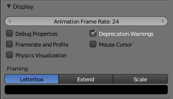

Display¶
The Display panel in the 渲染 tab of the Properties editor, let the game developer specify the maximum frame rate of the animations shown during the game execution, whether to see informations like framerate and profile, debug properties, physics geometry visualization, warnings, if the mouse cursor is shown during the game execution, and options to specify the framing style of the game to fit the window with the specified resolution.
Options¶

Display panel at the 渲染 tab.
- 动画 Frame Rate
- This numeric field/slider specify the maximum frame rate at which the game will run. Minimum is 1, maximum is 120.
- Debug Properties
- When checked, if a property was previously checked to be debugged during the game,
the values of this property will be shown with the
Framerate and Profilecontents. - Framerate and Profile
- When checked, this will show values for each of the calculations Blender is doing while the game is running, plus the properties marked to be debugged.
- 物理 visualization
- Shows a visualization of physics bounds and interactions (like hulls and collision shapes), and their interaction.
- Deprecation Warnings
- Every time when the game developer uses a deprecated functionality (which in some cases are outdated or crippled OpenGL Graphic cards functions), the system will emit warnings about the deprecated function.
- Mouse Cursor
- Whether to show or not the mouse cursor when the game is running.
- Framing
There are three types of framing available:
- Letterbox
- Show the entire viewport of the game in display window, using horizontal and/or vertical bars when needed.
- Extend
- Show the entire viewport of the game in display window, viewing more horizontally or vertically.
- Scale
- Stretch or Squeeze the viewport to fill the display window.
- Color Bar
- This will let the game developer choose the bar colors when using the Letterbox Framing mode.